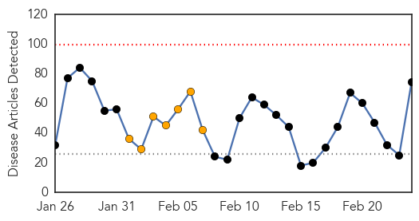

30 Day Trends
Web: 0 alerts, 7 warnings
Twitter: 0 alerts, 0 warnings
Top Articles:
- 0.977
- Quebec confirms case of deadly pig virus
- 0.947
- Probable norovirus sickens dozens onboard Holland America’s cruise ship, ‘ms Veendam’
- 0.947
- Mysterious polio-like illness affecting California kids
- 0.945
- Paralyzing "polio-like virus" suspected in up to 25 California children
- 0.934
- Mystery poliolike illness affects as many as 25 children in California
- 0.929
- Officials investigating salmonella outbreak at Old Country Buffet
- 0.923
- Mysterious Polio-like Virus reported among few Children in California
- 0.917
- Chicago Tribune
- 0.917
- Chicago Tribune
- 0.917
- Chicago Tribune
- 0.917
- Chicago Tribune
- 0.901
- Study reveals new ways deadly squirrelpox is transmitted to red squirrels
- 0.897
- Deadly potential of squirrelpox revealed
- 0.891
- Rare ‘polio-like’ disease reports : Nagaland Post
- 0.879
- Mysterious polio-like disease reported in California
- 0.877
- CDC investigating fourth possible outbreak of norovirus on cruise ship
- 0.866
- Kremlin says Putin, Hollande voice concern over Ukraine
- 0.866
- Lew, Lagarde agree on need for aid to Ukraine
- 0.866
- Information Required
- 0.866
- Seven Egyptian Christians found dead on Libyan beach
- 0.866
- Russian, NATO generals discuss Ukraine
- 0.862
- Polio-Like Illness Strikes California
- 0.849
- Mysterious polio-like illness paralyzes Californian children with NO hope of improvement
- 0.838
- New York Personal Injury Lawyer Kenneth A. Wilhelm Discusses Food Safety During Cruises
- 0.811
- Good biosecurity is the key to preventing the porcine epidemic diarrhea virus from spreading
- 0.786
- Pfizer Announces Positive Top-Line Results Of Landmark Community-Acquired Pneumonia Immunization Trial In Adults (CAPiTA) Evaluating Efficacy Of Prevenar 13*
- 0.783
- Polio-like illness afflicting children a mystery in California
- 0.781
- State, Federal Health Officials Continue to Investigate Deadly Listeria Outbreak
- 0.768
- The Voice of Russia: News, Breaking news, Politics, Economics, Business, Russia, International current events, Expert opinion, podcasts, Video
- 0.755
- S. Korea offers North help with foot-and-mouth outbreak – BorneoPost Online
- 0.752
- Mysterious, polio-like disease strikes children in California
- 0.749
- Times Of Oman :: S.Korea offers North help with foot-and-mouth outbreak
- 0.747
- Doctors Baffled by Polio-Like Illness in California
- 0.743
- Polio-like disease detected in California
- 0.733
- Ship hit by illness sets sail after thorough cleaning
- 0.719
- Mysterious polio-like illness affects kids in California
- 0.713
- Polio-like disease puzzles doctors in Calif.
- 0.711
- S. Korea offers North help with foot-and-mouth outbreak
- 0.698
- S.Korea offers North help with foot-and-mouth outbreak - Democratic People's Republic of Korea
- 0.692
- Ipswich: Vomiting virus forces Crabbe Street care home to close for visitors
- 0.691
- Mysterious Polio-Like Syndrome Strikes California Children
- 0.691
- Mysterious polio-like illness affects kids in California
- 0.670
- Squirrel pox more deadly than imagined
- 0.665
- Doctors in California warn of rare 'polio-like' virus
- 0.662
- South Korea offers help to contain outbreak of foot-and-mouth disease in North Korea
- 0.660
- Saudi- Database of medical and clinical facts launched
- 0.659
- Kyrgyzstan Tuberculosis: active form issue
- 0.637
- Roos Foods recalls 16 varieties of cheeses after listeria death
- 0.633
- Polio-like syndrome puzzles doctors
- 0.632
- Staff relocated as conflict worsens, South Sudan - South Sudan
Showing top 50 articles...
Top Tweets:
-
No tweets found for Feb 24, 2014
Web/News Articles
Tweets